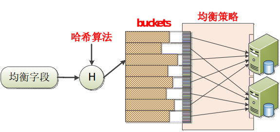

DDB架构
老架构

应用层app通过DBI驱动来访问DDB，与大多数驱动一样，DBI提供了访问DDB的各种接口。与mysql官方提供的Standard jdbc Connector/J不同，DBI首先会接收应用app的sql，通过解析器生成抽象语法树，再根据语法树生成分布式执行计划，然后通过jdbc驱动将执行计划下发给数据节点dbn，各节点执行sql通过mysql通信协议将结果返回，最后在DBI层进行结果的聚合并返回给应用层。
该架构有以下缺点：
- 由于语法解析、执行计划的生成都发生在应用服务器，一定程度上消耗了应用服务器的资源
- DBI通过打包成db.jar为供应用端所使用，DDB的升级需要重新打包，这就导致每次DDB升级都需要应用停服重启才能生效，给运维工作带来困难，造成的问题就是各个产品线使用不同版本的DDB
- 由于 DBI 部署在应用端,每次应用重启都会伴随着 DBI 模块的重启,由于 DBI 内
部维护了一些文件锁,瞬间重启可能由于操作系统的文件锁没来得及释放而抛异
常,
新架构

为了解决上述问题，实现DBI与应用层的解耦，DBA团队开发了QS模式。该模式单独抽出了一个QS层，通常一个应用对应对个QS节点。QS实现了mysql标准jdbc驱动到DBI驱动的转换，语法解析、执行计划的生成都在QS服务器上完成，为应用服务器减轻压力的同时，实现了与应用层的解耦，可以做到对应用层的无感知升级。另外，QS与应用服务器的交互完全采用标准mysql通信协议，应用层的语言不再限制为java。
全局自增ID
DDB不支持全局ID的单调递增！！
提供两种自增ID的分配方式：
- USB: User Sequence Based
- 通过数据库批量申请ID，默认一次1K个
- 优点：实现简单，满足大多数应用场景
- 缺点：依赖数据库，自增性不是很好
- TSB: Time Sequence Based
- 依赖QS时间戳生成全局ID
- 优点：自增性较好，不依赖数据库
- 缺点：字段太长，应用支持不是很好
我们通常使用USB。假设应用层对应两个QS节点QSa和QSb，采用USB模式时，QSa和QSb会各自预申请1000个ID，假设QSa申请到1~1000，QSb申请到1001~2000。我们每次insert一条数据时，会向QS申请分配一个ID，如果请求分配给QSa，那么QSa会从它的ID池中递增地拿出一个ID，类似地请求分配到QSb时，QSb会从1001~2000中拿出尚未分配出去的最小ID。因此，整体上ID有增长的趋势，但并非严格单调递增。
均衡字段实现分库
DDB通过均衡字段BF实现分库，每张表设定一个均衡字段，表数据根据一定的分区策略存储到不同的dbn节点上
DDB分区策略：%n (n=桶个数) + 二级映射
按照下图决定将数据存储到哪一个节点上：

这里的bucket是一个逻辑上的概念，它与物理节点的映射关系可以进行动态调整，这样的话增加或减少物理节点不会影响到均衡字段与桶的映射关系，方便动态扩容和缩容。
这种方案的一个特点就是数据分布情况取决于均衡字段的选择和hash函数的选取。举个例子，如果选取时间作为均衡字段，且hash函数就是简单地取模操作，那么这种方案适用于数据关于时间均匀分布的场景，数据会均匀地分布到各个节点上；但是如果某段时间内线上数据激增，那么大量的数据可能会汇聚到同一个节点上，增加了该节点的负荷。
其他
由于DDB是分布式数据库，在使用offset时要格外慎重。比如sql语句：select * from vcloud_vod_video limit 10 offset 1000，下发到每个dbn节点时，每个节点都会limit 1010，即limit+offset。过大的offset会直接导致慢sql，甚至导致OOM